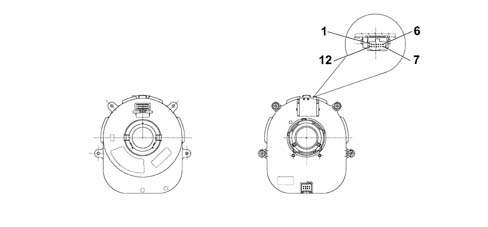

CLOCK SPRING INTERFACE (CVS)
- Path
- Descriptions > 55 ELECTRICAL EQUIPMENT > 5505 INSTRUMENT/GAUGE ELECTRICAL CIRCUITS > 5505A multi-function components > CLOCK SPRING INTERFACE (CVS)
- Kind
- system description
- Applies to
- all engines; all production periods
- Interactive page
- https://sloeber94.github.io/elrnDB-lThss/en/#/175350
Applies to: all engines; all production periods
SPECIFICATIONS

CLOCK SPRING PIN OUT
PIN | Function |
|---|---|
1 | earth |
2 | + 30 |
3 | B - CAN B |
4 | B - CAN A |
5 | INT from F49 CPL (15) |
6 | Steering Wheel Node Earth / steering wheel controls (horn) |
7 | tiptr - |
8 | tiptr + |
9 | airbag 2 - |
10 | airbag 2 + |
11 | airbag 1 - |
12 | airbag 1 + |